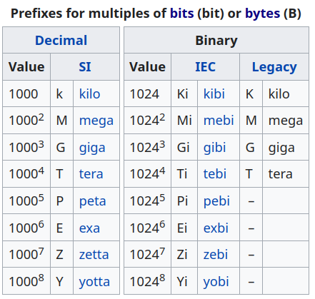

Programme Officiel
| Contenus | Capacités attendues | Commentaires |
|---|---|---|
| Écriture d’un entier positif dans une base b ⩾ 2 | Passer de la représentation d’une base dans une autre. | Les bases 2, 10 et 16 sont privilégiées. |
On a l’habitude d’écrire les nombres entiers naturels en utilisant la notation décimale, cependant les ordinateurs actuels utilisent la base 2 pour représenter toutes les informations et donc les nombres. Dans ce chapitre nous allons voir comment compter en binaire?
Chacun de ces nombres étant comprise entre 0 et 9, cela représente un ensemble de dix chiffres d’où le nom de notation décimale.
Les chiffres utilisés sont: 0 1 2 3 4 5 6 7 8 9
Cependant, nos ordinateurs actuels utilisent des transistors pour calculer qui ne possèdent que deux états: 0 1.
Lorsqu’on va compter, on va très rapidement se retrouver à court de chiffres, et on sera obligé d’ajouter des deuzaines, quatraines, huitaines à gauche… Tout comme nous ajoutions des dizaines, centaines, milliers en base 10.
| Représentation décimale | Représentation binaire |
|---|---|
| 0 | 0 |
| 1 | 1 |
| 2 | 10 |
| 3 | 11 |
| 4 | 100 |
| 5 | 101 |
| 6 | 110 |
| 7 | 111 |
| 8 | 1000 |
Codage binaire
Le système binaire est un système de numération utilisant la base 2. On nomme couramment bit (de l’anglais binary digit, soit « chiffre binaire ») les chiffres de la numération binaire positionnelle. Ceux-ci ne peuvent prendre que deux valeurs, notées par convention 0 et 1.
C’est un concept essentiel de l’informatique. En effet, les processeurs des ordinateurs actuels sont composés de transistors ne gérant chacun que deux états.
Actuellement, dans les systèmes numériques comme les ordinateurs, toutes les informations, qu’il s’agisse de nombres, de textes d’images, de sons ou encore de vidéos sont codées sous forme binaire.
Le système binaire est un système de numération positionnel utilisant la base deux.
Les chiffres utilisés sont: 0 1
Avec bits, on peut représenter informations.
Dans le cas des entiers naturels, on peut compter de à .
- avec 4 bits: de 0 à 15.
- avec 8 bits: de 0 à 255.
Dépassement de capacité
Un dépassement d’entier (integer overflow) est, en informatique, une condition qui se produit lorsqu’une opération mathématique produit une valeur numérique supérieure à celle représentable dans l’espace de stockage disponible. Article Wikipédia
Comment passer de la notation binaire à la notation décimale ?
est l’addition de droite à gauche de zéro unité, une deuzaine, une quatraine, une huitaine.
Soit mathématiquement:
Remarque: on indique la base de numération par un indice à la fin du nombre.
Soit
Comment passer de la notation décimale à la notation binaire ?
On regroupe les objets par paquets de 2 en réalisant des divisions successives jusqu’à obtenir un quotient égal à 0.
Trouver en base deux la représentation du nombre
13| 2
|---
1 | 6 | 2
|---
0 | 3 | 2
|---
1 | 1 | 2
|---
1 | 0
L’écriture du nombre se fait alors de droite à gauche :
On peut vérifier le résultat:
L’octet
Les mémoires actuelles sont toutes composées de cellules mémoires capables de retenir un bit. En mettant pleins de ces cellules dans un seul composant, et en mettant quelques circuits électroniques pour gérer le tout, on obtient une mémoire.OpenClassroom
L’état d’un circuit mémoire, se décrit par une suite finie de 0 et de 1, que l’on appelle un mot. Par exemple, le mot 100 décrit l’état d’un circuit composé de trois circuits mémoires un bit, respectivement dans l’état 1, 0 et 0.
Dans la mémoire des ordinateurs les circuits mémoire un bit sont souvent groupés par huit : les octets.
- Octet
-
Un octet (byte en anglais) est une suite de 8 bits. Il permet de coder valeurs.
Les unités de stockage
Contrairement aux préfixes du système international(SI) utilisé en physique qui utilise des puissances de 10, on utilise en informatique la norme IEC basés des puissances de 2.

Codage hexadécimal
La notation binaire bien qu’adaptée aux composants électroniques, ne l’est pas du tout pour l’homme. Certains des premiers ordinateurs, comme l’ENIAC utilisaient la base 10, cependant cette idée a été abandonnée en raison des difficultés que cela entraînaient au niveau électronique. La base 16, le système hexadécimal rend l’utilisation du binaire plus humaine.
Un chiffre hexadécimal est un mot de 4 bits puisque .
Les chiffres utilisés sont: 0 1 2 3 4 5 6 7 8 9 a b c d e f
Voici les correspondances entre les bases hexadécimale, décimale et binaire.
| Chiffre hexadécimal | Représentation décimale | Représentation binaire |
|---|---|---|
| 0 | 0 | 0000 |
| 1 | 1 | 0001 |
| 2 | 2 | 0010 |
| 3 | 3 | 0011 |
| 4 | 4 | 0100 |
| 5 | 5 | 0101 |
| 6 | 6 | 0110 |
| 7 | 7 | 0111 |
| 8 | 8 | 1000 |
| 9 | 9 | 1001 |
| A | 10 | 1010 |
| B | 11 | 1011 |
| C | 12 | 1100 |
| D | 13 | 1101 |
| E | 14 | 1110 |
| F | 15 | 1111 |
| 10 | 16 | 10000 |
Comment passer de la notation binaire à la notation hexadécimale ?
Comment représenter le mot binaire de 16 bits: 1010101111100001
On est d’accord, en binaire, c’est inhumain, par contre en hexadécimal, cela devient beaucoup plus lisible et manipulable:
Ou si l’on tient vraiment à notre bonne vielle base 10:
Pour passer de l’écriture binaire à l’écriture hexadécimale, il suffit de regrouper les chiffres binaires 4 par 4.
Trouver en base seize la représentation du nombre
En base 2: 101101 = 0010 1101
En base 16: 2 D
Soit:
On peut vérifier le résultat en base 10:
Comment passer de la notation décimale à la notation hexadécimale ?
On regroupe les objets par paquets de 16 en réalisant des divisions successives jusqu’à obtenir un quotient égal à 0.
Trouver en base seize la représentation du nombre
286 | 16
|---
14(e)| 17 | 16
|---
1 | 1 | 16
|---
1 | 0
L’écriture du nombre se fait alors de droite à gauche en remplaçant les nombres décimaux par leurs écritures hexadécimales:
On peut vérifier le résultat :
Opérations arithmétiques
Les méthodes utilisées en base dix s’appliquent de la même façon dans les autres bases.
Des dépassements de capacités (integer overflow) peuvent advenir en cas d’addition( sur un octet!).
Les soustractions doivent donner des résultats positifs, car on ne code pas encore les entiers relatifs( qui ne peut pas être codé!).
Addition binaire
Réaliser l’addition binaire:
(1) (1)
1 0 1 1
+ 1 0 1 0
-------
1 0 1 0 1
On peut vérifier le résultat en base 10 :
Addition hexadécimale
Réaliser l’addition hexadécimale:
(1)
A 8 0 3
+ 2 D 3 5
-------
D 5 3 8
On peut vérifier le résultat en base 10:
Soustraction binaire
Réaliser la soustraction binaire:
1 0 1 1
- 0 1 1 0
(1)
-------
0 1 0 1
On peut vérifier le résultat en base 10:
Soustraction hexadécimale
Réaliser la soustraction hexadécimale :
A 8 0 3
- 2 D 3 5
(1)(1)(1)
-----------
7 A C E
On peut vérifier le résultat en base 10 :
Maintenant que vous avez tout compris, voici un lien vers un convertisseur en ligne.
http://www.binaryconvert.com/convert_unsigned_int.html
Conversions et opérations en python
Bien entendu, comme ce genre d’opérations est courante en informatique, python possède des fonctions pour manipuler les nombres entiers en base décimale int(), en base deux bin(), en base seize hex().
Vous pouvez trouver quelques exemples de ces conversions sur cette réponse du forum de programmation en anglais stackoverflow
ATTENTION
Les nombres binaires et hexadécimaux sont représentés en Python sous forme de chaîne de caractères avec un préfixe.
Obpour les nombres binaires par exemple'0x1001'pourOxpour les nombres hexadécimaux par exemple'0xABCD'pour